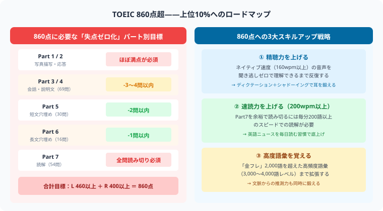

TOEIC 860点の勉強法・突破スケジュール【2026年版】
更新日：2026年5月22日｜スタディクエスト編集部
TOEIC 860点は上位約10%のスコア帯であり、外資系企業やグローバル部門への配属要件としてよく設定される「ハイスコアの分水嶺」です。730点突破とは異なる質の高さが求められるこのレベルを、パート別戦略・フェーズ別ロードマップで攻略します。
TOEIC 860点とは？

図：860点達成に必要な各パートの許容失点数（Part1/2ほぼ満点・Part7全問読み切り等）と、精聴力・速読力・高度語彙の3大スキルアップ戦略
TOEIC 860点は全受験者の上位10%に相当するハイスコアの分水嶺です。730点台から860点へのジャンプには「まぐれなし」の精度と、パート別の失点ゼロ化戦略が求められます。
- 全受験者の上位約10%に相当するスコア帯であり、「ハイスコアの分水嶺」と呼ばれる
- 外資系企業・グローバル部門への配属・昇進要件としてよく設定されるレベル
- 「英語でビジネスが自律的にできる」とみなされ、英語を使った実務遂行力の証明になる
- TOEICスコア評価の最上位区分「Aレベル（860〜990点）」の下限に位置する
Aレベルとは：TOEICを運営するETSが定める5段階のスコア評価のうち最高ランク。860点以上は「Non-Nativeとして十分なコミュニケーション能力がある」と公式に定義されています。
現在のスコア別・必要勉強時間
| 現在のスコア | 必要勉強時間 | 目安期間 |
|---|
| 700点以下 | 400〜600時間 | 1〜1.5年 |
| 700〜730点 | 200〜300時間 | 6〜9ヶ月 |
| 730〜800点 | 150〜200時間 | 4〜6ヶ月 |
| 800〜840点 | 50〜100時間 | 2〜3ヶ月 |
860点突破の難しさは「問題を解く量」ではなく、「1問の分析精度」にあります。800点台に乗ったあとは量より質を意識した学習に切り替えることが重要です。
860点突破に求められる英語力
語彙力（8000語超）
金フレ（TOEIC L&R TEST 出る単特急 金のフレーズ）・銀フレを完全習得した上で、さらに語彙を広げる必要があります。「TOEIC上級単語」「英字新聞・ビジネス英語」レベルの語彙が求められ、単に意味を知っているだけでなく、類義語・コロケーション（語の組み合わせ）の精度が問われます。
- 金フレ・銀フレの「完全習得」が前提（意味だけでなく例文ごと定着させる）
- 「TOEIC上級単語スピードマスター」や英字新聞（The Japan Times等）で語彙拡張
- 類義語・コロケーションの正確な使い分けが高難度語彙問題のカギ
リスニング満点近く（495点中470点以上）
860点を達成するには、リスニングで470点以上（Part 1〜4の正答率約95%以上）を確保することが現実的な目標です。特にPart 3・4の意図問題・図表問題は、会話・説明文の内容を正確に把握した上で「話し手の意図」や「図表との照合」が必要となるため、高度な集中力が求められます。
- Part 3・4の意図問題・図表問題で落とさない精度を身につける
- ナチュラルスピード（Native速度）の英語に慣れ、内容を瞬時に整理できるようにする
- 英語ポッドキャスト・TED Talksを日常的に聞き、英語を英語のまま理解する力を養う
リーディング（70分で54問完走）
860点突破において最大の壁になりやすいのがリーディングの「時間切れ」問題です。Part 7（読解問題）を最後まで解き切れずに終わるうちは860点到達は困難です。時間切れゼロを前提とした速読力の強化が必須です。
- 70分でPart 5（30問）・Part 6（16問）・Part 7（54問）を全問解き切るペース配分を確立する
- Part 7の全問を75〜80%以上の正答率で解くことを目標にする
- 複数パッセージ（ダブル・トリプルパッセージ）の「情報統合問題」に強くなる
パート別目標と860点の壁
| パート | 目標正答率 | 860点突破のための注意点 |
|---|
| Part 1（写真描写） | 100% | 紛らわしい選択肢に引っかからない。消去法を徹底する |
| Part 2（応答問題） | 92%以上 | 間接応答・否定疑問文に完全対応。「え、どういう意味？」と詰まる問題をゼロにする |
| Part 3（会話問題） | 85%以上 | 意図問題・図表問題で確実に得点。先読みを徹底して設問を事前把握する |
| Part 4（説明文問題） | 85%以上 | 複雑な状況説明を瞬時に整理。長めのトークでも冒頭30秒で全体像を把握する |
| Part 5（短文穴埋め） | 95%以上 | 語彙問題で1問も落とさない。文法問題は10秒以内に判断する |
| Part 6（長文穴埋め） | 90%以上 | 文章全体の流れを把握した上で空欄に適切な語句・文を選ぶ |
| Part 7（読解問題） | 80%以上かつ時間内完走 | 速読の精度が鍵。1パッセージ問題は2〜3分、複数パッセージは4〜5分で処理する |
860点の壁：800〜840点で停滞する人の多くは「Part 7の時間切れ」か「意図問題・図表問題での失点」のどちらかです。この2点を集中的に改善することが860点突破の最短ルートです。
860点突破の学習ロードマップ
フェーズ1（1〜3ヶ月）：精読・精聴で土台固め
高得点帯では「解いた問題数」よりも「1問の分析深度」が結果を左右します。公式問題集を1問ずつ「なぜ正解か・なぜ不正解か」まで徹底分析することが出発点です。
- 公式問題集（Vol.9・10）を1問ずつ正解理由・不正解理由まで分析する（解きっぱなし厳禁）
- シャドーイングを毎日20〜30分実施。スクリプトを見ながら→見ずに、の順で練習する
- 語彙：「TOEICテスト英単語スピードマスター」など上級語彙集を1冊選んで進める
- Part 5・6の問題は文法解説まで読み込み、正解の根拠を言語化できるようにする
フェーズ2（4〜6ヶ月）：スピードアップ
土台ができたら、本番と同じ時間制限の中で精度を落とさず解き切る「処理速度」を上げる段階です。
- 本番形式（リスニング45分＋リーディング75分の2時間通し）を週1回実施する
- Part 7の各パッセージごとの解答時間を毎回記録し、少しずつ短縮する
- 英語ニュース・ポッドキャスト（BBC、NPR、NHK World Radio Japan等）を通勤時間に聴く習慣をつける
- 意図問題・図表問題を専用に集めた問題集や参考書で集中演習する
フェーズ3（7ヶ月〜）：本番調整
実力が安定してきたら、本番で最大限の力を発揮するための調整フェーズに入ります。
- 直近の公式問題集（最新版から順に）を全冊消化する
- 弱点パート（意図問題・図表問題・複数パッセージ）だけ抜き出して反復練習する
- 試験1週間前は過去問のみ・新しい教材は一切入れない（脳の混乱を防ぐ）
- 試験前日は軽い復習のみ。当日は早起きして試験開始1〜2時間前に軽く頭を動かす
学習記録が継続の鍵：860点突破は短距離走ではなくマラソンです。毎日の学習時間を記録し、積み上げを可視化することで学習継続率が大幅に上がります。スタディクエストのアプリを活用しましょう。
860点を取ってからのキャリア活用
860点は単なる数字ではなく、キャリアを大きく広げる「証明書」になります。取得後の活用方法を確認しておきましょう。
- 外資系・グローバル企業：採用・昇進・海外赴任の選考で強いアピールになる。860点以上を公式の要件に設定している企業も多い
- 英語教員採用試験：教員採用試験において英語力の証明として優遇される自治体がある
- 英語力の「客観的証明」：面接・エントリーシートでの英語力のアピールが数値で完結する
- 次のステップ（990点満点挑戦）：860点到達後に満点を目指す場合、さらに精度の高い語彙力・文法知識が求められる
- TOEFL iBT・英検準1級・1級：海外大学進学やアカデミック英語が必要な場合はTOEFL iBT、4技能の総合的な英語力証明なら英検準1級・1級へのチャレンジも選択肢に入る
⚔ TOEIC 860点突破を一緒に目指そう
スタディクエストなら毎日の英語学習時間が経験値に変わります。
ハイスコアを狙うライバルと競いながら860点まで継続できます。完全無料。
今すぐ無料で始める →
まとめ
- TOEIC 860点はTOEIC「Aレベル」の下限であり、上位約10%のハイスコア帯。外資系・グローバル企業で強力な武器になる
- 730〜800点台からの突破には150〜200時間が目安。問題を「解く量」より「分析の質」を重視する
- リスニングは意図問題・図表問題の精度を上げ、英語ポッドキャスト・TED Talksで耳を鍛える
- リーディングは「時間切れゼロ」が絶対条件。Part 7の速読力と複数パッセージへの対応力を鍛える
- 3フェーズ（精読精聴→スピードアップ→本番調整）のロードマップで系統立てて取り組むことが860点への最短ルート